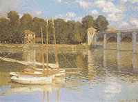
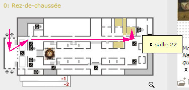
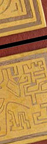

Archives 2007
Actualités / blog des sites
22/12/2007
Le
portail du Réseau ArtRéalité est ouvert. La page d'accueil de
ArtRéalité.com a été naturellement choisie pour l'accueillir. L'ancienne
page a été transférée "juste derrière", vous pouvez l'atteindre en un
clic.
Cette nouvelle structure de navigation n'est
pas encore achevée mais les fonctions sont opérationnelles.
Il s'agit bien d'un portail qui vous emmène
directement vers les différentes têtes de sections des sites.
La forme choisie : vidéo et "menus vivants",
est une première du genre. Nous espérons qu'elle vous plaira, et surtout
qu'elle vous surprendra. N'hésitez pas à nous écrire
pour nous donner votre opinion.
Joyeuses fêtes de fin d'année !
8/12/2007
Le réseau travaille dur à son projet de prix
d'art contemporain 100% web (remise des prix en juin 2008) et à un projet
de portail... un peu original que vous devriez découvrir dans les semaines
à venir. Il s'agit de gros chantiers mais nous continuons à effectuer des
suivis et des modifications en parallèle. Signalons notamment une nouvelle
entrée dans la section « Hi-tech » consacrée aux
"pico-projecteurs". Les
modifications ponctuelles sur Dotapea et ArtRéalité.com continuent, de
même que les traductions et l'élaboration de nouveaux
"Dialogues de Dotapea".
Par contre rien de neuf du côté du projet de
forum et nous recherchons toujours des solutions techniques et graphiques
valables de ce côté. N'hésitez pas à nous écrire.
25/11/2007
Les vidéos périphériques du réseau
ArtRéalité sont maintenant toutes transférées sur serveur dédié, donc bien
visibles en streaming, débarrassées des problèmes de téléchargement.
Encore une fois merci d'avoir pris patience.
Un nouveau site est en cours de création. Il
devrait atteindre une forme achevée en février 2008 mais il sera peut-être
accessible d'ici-là.
13/11/2007
Fin du premier grand chantier
D'abord nous vous présentons nos excuses
pour les anomalies que vous avez pu constater ces derniers jours en
visitant Dotapea et ArtRéalité.
La première étape de la refonte de ces deux
sites est terminée grâce à l'aide du talentueux webmaster de
LaCritique.org et
de nos amis de QuidNovi.
De quoi s'agissait-il ?
- d'un passage en hébergement dédié.
- d'un changement de plateforme de
développement,
A quoi cela a-t-il servi ?
- à permettre une bien meilleure diffusion
vidéo. Il faudra encore quelques jours, tout au plus deux semaines, pour
que les transferts soient tous effectués mais pour les habitués des
inconforts vidéo du réseau ArtRéalité, voir cet
exemple déjà
en ligne va représenter un changement notable. Qui ouvre des
perspectives.
- à quitter un hébergeur, Platine/Proregna,
que l'on a trouvé efficace, réactif, agréable sur le plan relationnel dans
un premier temps, infiniment moins dans un second. Ce n'était jamais que
le troisième hébergeur. Nous avons dorénavant acquis davantage
d'indépendance.
- à améliorer la qualité technique de nos
pages.
Quelle sera la suite des
événements ?
- l'implantation d'un portail pour tout le
réseau ArtRéalité à des fins de lisibilité. Ce portail sera situé en page
d'accueil de ArtRéalité.com.
- la création d'un prix artistique.
29/10/2007
Grand chantier
Dotapea.com et ArtRéalité.com changent de
plateforme de développement, l'hébergement va être placé en "dédié" et
ArtRéalité.com va se transformer très profondément : une période de grands
travaux s'ouvre. C'est devenu indispensable d'une part parce que
ArtRéalité.com doit mûrir (et mûrira de manière littéraire), d'autre part
parce que nous voulons développer considérablement l'activité vidéo de
l'ensemble du réseau ArtRéalité. Au programme aussi, le fameux forum que
nous vous promettons depuis longtemps.
Dotapea, Fenêtre sur sites et Pourpre ne
devraient guère changer d'apparence et des mises à jour continueront à
avoir lieu pendant les travaux.
Vous lisez plus de 700 000 pages chaque mois
sur le réseau ArtRéalité. C'est pour nous une motivation magnifique pour
développer notre initiative indépendante.
A tous, merci.
24/10/2007
Une
fleur dans l'ordure
L'AFP a publié hier une information - peu
relayée par les médias - qui ressemble à un fait divers mais qui frappe
l'imagination et suscite réflexion.
Selon la dépêche, un tableau ("Trois
personnages") de Rufino Tamayo, un grand artiste mexicain du XXème
siècle, a été retrouvé par une New-Yorkaise entre deux sacs poubelles en
2003. L'heureuse découvreuse - qui devrait toucher quelques primes et
intéressements car l'oeuvre va être vendue - aurait déclaré "Je ne
connais rien à la peinture contemporaine mais j'ai pensé qu'il n'était pas
juste de jeter ainsi un objet d'art".
Le tableau, peint en 1970 et acheté en 1977
avait été dérobé au Texas en 1987.
On se contentera d'un "no comment" sur cet
événement bien qu'il soulève de nombreux questionnements. L'occasion pour
nous de dire combien nous souhaitons créer un forum où ces sujets seraient
l'objet de débats. On y travaille. Ce n'est pas simple, merci de votre
patience.
17/10/2007
Semaine de l'art
contemporain à Paris
Une courte période privilégiée. Il y a beaucoup de choses à voir cette semaine
(jusqu'au lundi 22) dans la capitale française :
_Slick
(superbe !), mais aussi
Show Off,
les Elysées de l'art
et
la FIAC.
8/10/2007
Belphégor au musée
d'Orsay
Analyse d'un fait
divers
Cinq Belphégor
On l'entend ou on le lit sur tous les
médias : une "bande" constituée d'une fille et quatre garçons décrits
comme éméchés aurait pénétré par effraction le musée d'Orsay de Paris et
aurait abîmé d'un coup de poing un chef d'oeuvre de Claude Monet. Tout
cela sur fond de Nuit blanche. Une affaire rocambolesque et non
dénuée de fantaisie.

Belphégor en Bruce Lee
Le tableau - un chef d'oeuvre - est peu ou
prou un "25P", une surface déjà appréciable.
Il aurait été déchiré sur dix centimètres nous dit-on par un coup de
poing (selon les termes de la ministre).
Un tableau n'est pas un tambourin. Le lin
n'est pas de l'organdi, de la tulle ou du papier. C'est un textile
extrêmement robuste, doté d'une trame et d'une chaîne (voir
article). A moins que ce support fut pourri (à
Orsay on peut en douter mais ce n'est pas impossible dans l'absolu), un coup
de poing - ou un coup de coude, lit-on - même très violent aurait plutôt fait éclater le châssis en
admettant que la toile soit extrêmement tendue et en admettant aussi que
le malfaiteur ait d'abord décroché le tableau pour éviter de démolir son
propre poing sur le mur, mais alors aurait-il pu le tenir assez solidement
d'une seule main ? Aurait-il eu le temps de le poser habilement, en
biais, contre un mur ou de demander à un comparse de le tenir à deux
mains ? Ou s'est-il blessé avec le mur ?
Étant donné la surface dont il est question,
cela paraît de toute façon surprenant car le lin
sans être du caoutchouc est durablement élastique de même que l'enduit (colle
de peau) et la peinture (huile de lin)
qui le recouvrent. Pour abîmer une toile de la sorte il faut un objet
contondant, a minima anguleux, ou bien peut-être le savoir-faire d'un
expert en arts martiaux, ce qui n'est pas à exclure. Normalement, il n'y a
qu'au cinéma que ce n'est pas le châssis qui cède, et les accessoiristes
préparent la toile. Il ne s'agit pas ici de dire que ce n'est pas possible
mais que cela mériterait clarification.
Belphégor en Arsène Lupin
Un second questionnement se pose avec
davantage d'acuité.
Une bande de voyous éméchés qui parcourrait
en pleine nuit le musée d'Orsay aller et retour dans le sens de la longueur, donc sur environ
deux cent mètres au total - une bagatelle
-, serait-ce vraiment possible ? Ce musée expose entre
autres des Van Gogh, des Monet, des Lautrec, des Renoir, c'est-à-dire les
oeuvres des artistes dont la cote est la plus élevée au monde. La valeur théorique de
ce trésor national doit se compter en milliards. On peut là exprimer une certaine surprise :
peut-on y déambuler, comme Belphégor au Louvres, ivre de plus, sans rencontrer
gardiens, grilles, gaz, lasers et autres gadgets dissuasifs dernier cri ?
La question "comment est-ce possible ?" se
pose nécessairement.

Belphégor est très rapide
La ministre déclare : "Ils ont fait des
saletés un peu partout et ont fini par mettre un coup de poing dans le
tableau". Le problème semble d'avoir le temps de le faire puisque
les
échappés furent apparemment repris in extremis à la sortie et ne seraient restés
que trois
minutes dans le musée. Certes il est possible de faire beaucoup de choses
en peu de temps mais cela surprend étant donné la
distance parcourue, l'état supposé des délinquants et les actes réalisés.
Belphégor in the sky with
diamonds
Récemment les voleurs du tableau Le cri
de Munch ont été arrêtés. Si le trafic d'oeuvres de valeur modérée reste
malheureusement à l'ordre du jour, ce type de tableaux est invendable pour
un malfaiteur. Il faut effectivement être ivre, rêveur ou quelque peu
borné à ce jour pour tenter une effraction aussi téméraire qu'inutile au musée d'Orsay.
Belphégor sur l'écran noir
de quelle nuit blanche ?
Ces incroyables événements auraient eu lieu
pendant la Nuit blanche, un événement annuel important pour l'art
contemporain qui a donné lieu il y a quelques années à un attentat contre
le maire de Paris. Pour autant, faut-il se faire un cinéma ?
Que cette affaire finalement sans grande
importance en soi (le tableau sera réparé) ait des connotations politiques, de
droit commun ou artistiques, on a voulu pointer ici certaines imprécisions
ou invraisemblances naïvement relayées par les organes de presse
généralistes et c'est le sens de cette intervention.
Que les faits soient réels et exceptionnels est possible mais quelques éclaircissements de la part des officiels et
surtout quelques précautions
de la part des rédacteurs seraient bienvenus ne serait-ce que dans la
perspective de rester tous crédibles. On ne veut pas livrer "brutes" des
informations telles que "Des cambrioleurs ivres ont parcouru 100 m dans
le musée d'Orsay puis ont crevé un tableau d'un coup de poing et sont
ressortis". Ce
n'est pas sérieux.
6/10/2007
De la vidéo en
régie de communication
Sur tous les sites du réseau ArtRéalité
circule pour la première fois en marge droite un visuel vidéo. La petite
chouette blanche de Flavio Cury ouvre une ère annoncée dans le communiqué
ci-dessous.
Nous avons veillé comme promis à respecter
le confort de lecture mais n'hésitez pas à nous
écrire si ce changement vous paraît désagréable ou pour tout autre
problème.
3/10/2007
3ème conversation de ArtRéalité.com
L'impossible captation de la beauté de la nature,
l'importance de la contrainte et du voyage. C'est la troisième
Conversation de ArtRéalité.com, avec Hans
Bouman.
26/9/2007
Communiqué
Chers amis lecteurs, quelques mots sur ce
qui se dessine sur le réseau ArtRéalité.
Vous avez pu constater ces derniers temps
que nous effectuons de petits tests vidéo dans l'espace de communication
(marge droite). Nous allons très prochainement pouvoir intégrer dans cette
marge des vidéos d'artistes et des communications diverses grâce à de
nouvelles collaborations.
Nous veillons scrupuleusement à préserver le
confort de la lecture à la fois par la forme et par le contenu.
Concrètement, la vidéo sera en petit format (120x90) pour ne pas "taper à
l'oeil", la publicité n'envahira pas démesurément l'espace-temps de la
régie et elle restera ciblée. Pas de pub-pollution pour les assurances
auto ou les voyages Sncf, aucun changement sur ce point. Par contre nous
afficherons des reportages et des créations originales. C'est pour très
bientôt.
24/9/2007
Les "opales polymères"
Une recherche prometteuse - non sans dimensions
plastiques - sur les métamatériaux dans le domaine chromatique et
tridimensionnel.
9/2007
Peinture au plomb sur les
jouets :
nouveau rebondissement spectaculaire de l'affaire Mattel
Et le moins que l'on puisse
dire est que celle-ci devient de plus en plus opaque. Ainsi le 21, Mattel
a présenté des excuses cette fois non au Congrès américain (voir
ci-dessous) mais à la République Populaire de Chine.
Mais attention,
l'information est relayée non sans grosses erreurs par la presse
francophone voire anglophone aussi préfèrera-t-on donner une référence
directe, le communiqué de presse de cette entreprise :
lien (en anglais).
La Chine continuerait -
selon ce document qui est assez précis - à poursuivre des personnes
isolées ("individuals") en relation avec des sous-traitants
responsables de l'application de peintures toxiques sur des millions de
joujoux.
Cependant Mattel précise que le rappel des produits ne serait pas
lié à une erreur d'un fournisseur mais à un changement rétroactif de ses
propres normes et c'est pour cette raison que cette firme s'excuserait
auprès de la RPC pour les critiques subies suite à ce rappel.
Pour être précis, ce texte -
qui arrive bien tard - n'en est pas moins complexe et pourrait soulever
plus de questions qu'il n'apporte de réponses.
Voyons, le directeur d'une
entreprise chinoise sous-traitante de Mattel se suicide il y a moins de
quinze jours (voir ci-dessous) mais au fond
"c'était pas de sa faute" ? Et pourquoi la police chinoise
pourchasserait-elle des "individuals" ?
Non, la vraie question
semble maintenant naturellement concerner la motivation de Mattel à
augmenter soudainement son niveau d'exigence en matière de teneur en plomb
(ce qui est une information non confirmée et surtout non documentée).
18 ou 19 millions de jouets
toxiques, c'est très grave évidemment. Les métaux lourds dans les
peintures, ce n'est pas anodin, comme nous le disons ici et là sur ce
site.
Mais combien de jouets toxiques encore dans
la nature ? Mattel ne communique pas sur ce point crucial, le seul qui
pourrait commencer à rétablir la confiance.
N'oublions pas une
rassurante déclaration d'un dirigeant chinois :
« "Plus de 99% des produits d'exportation
chinois sont sûrs", a déclaré mercredi le ministre chinois du Commerce Bo
Xilai. » (Reuters, 2/8/2007)
Bien entendu nous appelons nos chers
lecteurs à la plus grande vigilance dans l'intérêt des enfants.
18/9/2007
La carnation
Une merveille naturelle, la peau, fut et demeure
l'objet des travaux parmi les plus célèbres de l'histoire de l'art.
Nouvel article dédié.
13/9/2007
Peinture au plomb sur les
jouets : suites de l'affaire
On l'apprend dans le New York Times, Robert
A. Eckert, le directeur exécutif de Mattel fait ses excuses devant le
Congrès américain. "Comme vous, je fais profondément attention à la
sécurité des enfants", dit-il. Mais la colère gronde, des membres du
Sénat ne semblent pas d'accord et proposent des mesures fortes qui
concernent d'ailleurs autant les industriels que les détaillants. "Cela
doit cesser, il est temps pour nous d'agir", dit ainsi le sénateur
démocrate Amy Klobuchar qui donne le ton, nettement relayé par les associations de
consommateurs toujours sous le choc de cet énorme scandale international
qui aurait déjà fait des victimes, à commencer par le premier responsable,
un sous-traitant chinois (voir ci-dessous).
Qu'en est-il en Francophonie où la presse
généraliste semble avoir totalement déserté ce dossier que nous sommes
obligés de suivre via la presse arabophone et anglophone ?
Cette affaire nous concerne tous, elle n'est
absolument pas terminée. Parmi les 18 millions de jouets en cause, combien
sont encore "dans la nature", y compris en Francophonie ? On n'en sait rien et Mattel ne communique
pas sur ce point (à voir, la très procédurière
page que cette entreprise met à disposition). Le plomb atteint les
enfants et les adultes quel que soit leur lieu de naissance donc Dotapea
recommande à tous les parents une grande prudence lors de l'achat de
joujoux peints.
6/9/2007
Le chapitre XXI des dialogues est en ligne
(cliquer ici).
Les résines synthétiques sont-elle seulement synthétiques ou peuvent être
naturelles, un simple bijou en époxy peut-il être dangereux ? Premier jet
d'un texte consacré à un thème particulièrement riche et source de
questionnements.
Par ailleurs d'importants ajouts ont été effectués
dans l'article La transmutation.
Qu'est-ce que la "vallée de la stabilité", en quoi un élément non-noble
présente-t-il une noblesse insoupçonnée ?...
20/8/2007
révision le 22
Alors que la peinture chinoise au plomb
continue à faire parler d'elle dans le monde entier (class action
aux États-unis où déjà des enfants auraient été atteints) et que Wikipedia
présente pour d'autres comme pour nous (voir ci-dessous)
de nouveaux aspects imprévus relayés dans les différents grands journaux
internationaux, Dotapea cultive son jardin et publie de nouvelles moutures
de différents articles parmi lesquels on citera spécialement
*
le papyrus
*
le parchemin
* ainsi que des
modifications substantielles concernant le papier
et la toile.
13/8/2007
Peinture chinoise au
plomb :
un rebondissement
dramatique inattendu
On l'apprend par le site de Al'Jazeera
d'après un scoop du journal chinois Southern Metropolis Daily :
Zhang Shuhong, le directeur de l'entreprise Lee-Der Industrial,
sous-traitante chinoise responsable de « l'affaire des jouets Mattel » -
des jouets peints avec une peinture toxique au plomb - s'est suicidé dans
un entrepôt ce week-end.
L'article en anglais sur AlJazeera.net
Par ailleurs ce ne seraient pas 1,5 mais 18
ou 19 millions de jouets (selon les sources) qui seraient concernés
(information non confirmée) dans cette affaire évoquée déjà sur cette page
le 2/8.
11/8/2007
Wikipedia :
Appel à la vigilance
On vient de s'en apercevoir : l'article "Paraffine"
du site Wikipedia faisait de larges emprunts au nôtre (lien).

Une pratique absolument déloyale et illégale
qui pourrait mener à des poursuites.
Dotapea est le fruit d'un travail
considérable, de collaborations multiples. Nous entendons faire respecter
nos droits d'auteurs.
Article complet et
sérieux appel à la vigilance :
lire
l'éditorial
de ArtRéalité.com.
8/8/2007
Ajouts et modifications
Le sgraffito et sa forme traditionnelle de
peinture à fresque.
Lien.
La transmutation,
un phénomène qui en dit long sur notre méconnaissance commune de la
matière. Un sujet non dénué d'implications artistiques ou poétiques (voir
fin). La science ne fait-elle pas partie de la culture ?
La dialyse permet-elle vraiment de
distinguer les
cristalloïdes des
colloïdes ? L'enquête est en cours sur ces enjeux déterminants dans
l'univers des "charges". Lien.
2/8/2007
La peinture au plomb
n'est pas morte
Au fil des pages, Dotapea met largement
l'accent sur la sûreté des peintures et des différents produits destinés
aux arts plastiques, décoratifs, etc. En ce début de mois d'Août, l'agence
Reuters publie une dépêche qui vient nous rappeler à quel point ce sujet
demeure d'actualité. Quelques extraits, sans commentaires :
« Le géant américain du jouet Mattel
rappelle 1,5 million de jouets fabriqués en Chine susceptibles de contenir
des peintures toxiques.
Les jouets concernés, de la marque Fisher-Price, qui comprennent notamment
les personnages à succès de la série Sesame Street, ont été fabriqués par
un sous-traitant chinois qui a employé un pigment contenant du plomb, a
expliqué Mattel mercredi.
Mattel demande aux consommateurs et revendeurs américains de renvoyer
967.000 jouets et rappelle également 533.000 jouets vendus au Mexique, au
Canada et en Grande-Bretagne. »
(...)
« "Plus de 99% des produits d'exportation
chinois sont sûrs", a déclaré mercredi le ministre chinois du Commerce Bo
Xilai. »
Le texte complet sur le site Reuters.fr
[Deux nouveautés dans « Hi-tech » -
Cliquer ici]
Les échelles
Le chapitre XX des
Dialogues de Dotapea tente de donner des points de repère
"fondamentaux" sur les dimensions des matériaux que nous manipulons... et
qui nous constituent.
Vidéo en élaboration.
Cliquer ici.
Triptyque
Électricité
oxydation
métaux
Trois chapitres des
Dialogues de Dotapea
... qui abordent de
multiples concepts, phénomènes et techniques :
le chapitre XVII, L'électrolyse et les
ions
le chapitre XVIII, L'électricité,
encore un peu plus loin
le chapitre XIX, Oxydation, métaux
Au fil de cette trilogie,
découvrez de très nombreux concepts et des applications méconnues dans le
champ des arts plastiques.
Vidéos, forum :
limites techniques, financières et
humaines
mise à jour le 9/9/2007
Une solution se profile
sur le versant vidéo
grâce à la location
prochaine d'un serveur dédié.
Quant au forum, les
problèmes demeurent.
On y a cru, on y croit toujours, mais les
obstacles sont nombreux. Alors que d'autres secteurs de Dotapea/ArtRéalité
se développent, ceux-ci restent en partie bloqués.
En vidéo,
voici quelques mois nous avions trouvé une solution technique permettant
un affichage presque instantané pour une partie de notre espace
d'hébergement dont les performances baissaient. Malheureusement, cette
baisse s'est radicalement accentuée.
Dit autrement, à ce jour deux tiers environ
des vidéos de ArtRéalité ne sont plus en "streaming". L'affichage reste de
qualité - et celle-ci demeure modulable - mais l'attente est longue et la
différence entre par exemple
l'entretien avec Alain Jouffroy (qualité supérieure) et la vidéo "Bay
water watch" (pourtant de qualité "allégée") est considérable.
L'hébergement des vidéos nécessite un
investissement car il s'agit le plus souvent chez nous d'oeuvres
originales, ce qui nous empêche de recourir à des solutions telles que
DailyMotion ou YouTube sinon ponctuellement ou dans d'autres contextes.
Nous vous demandons donc, chers visiteurs,
de bien vouloir patienter - et pourquoi pas suggérer
des solutions - pendant que nous étudions les meilleurs possibilités
techniques et financières permettant de continuer à offrir un accès
gratuit à une production audiovisuelle de qualité.
Concernant le
forum, nous accusons un retard considérable suite à un problème
technique s'ajoutant à un autre problème tout simplement humain, un
impondérable auquel nous ne pouvons rien. A cette heure, nous ne pouvons
garantir que ce projet aboutira alors que nous constatons votre demande et
croyez que nous en sommes désolés. Les bonnes volontés sont donc
bienvenues. Nous avons besoin de compétences en technique d'une part et en
modération d'autre part.
L'holographie a 60 ans
Faisons le point sur les
technologies 3d
Représenter un objet dans
l'espace et non sur un plan reste difficile. Porteuse de promesses dès le
lendemain de la deuxième guerre mondiale, l'holographie a été
incontestablement décevante. Cependant, certains progrès ont été acquis au
fil du temps et ont nettement fait évoluer cette technologie qui reste
reine dans l'univers de la « restitution 3d ». L'holographie numérique,
notamment, semble se distinguer.
La première version du chapitre XV des Dialogues de
Dotapea fait intervenir Dominique Sevray, une figure importante de ces
techniques qui intéressent de nombreuses disciplines.
Cliquer ici.
Intérieur,
extérieur, chaux
Le tadelakt et d'autres techniques aux applications
multiples
Beaucoup de créations particulièrement solides
peuvent être effectuées à l'aide de techniques à la chaux dont certaines
sont encore assez méconnues, encore peu explorées alors qu'elles ont fait
leurs preuves depuis très longtemps.
Artistes, décorateurs, amateurs, particuliers, cette
conversation entre la spécialiste Clothilde, le physico-chimiste
Jean-Louis et le candide Emmanuel vous donnera quelques indications sur
les possibilités de ces procédés.
Retour
début de page